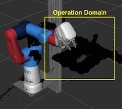
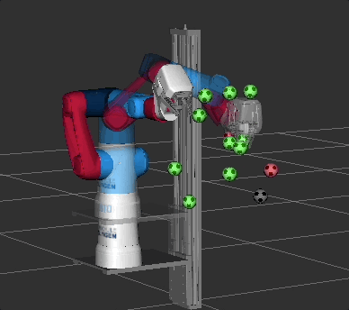
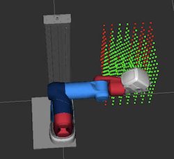
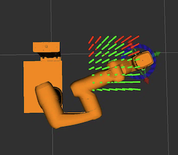
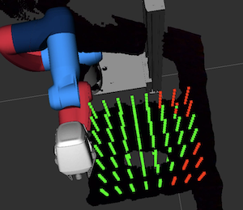
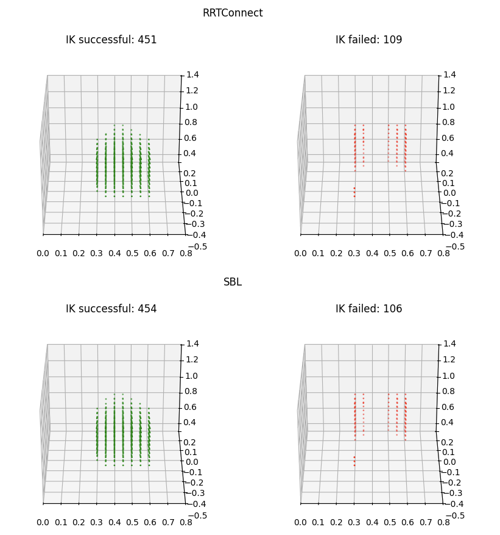
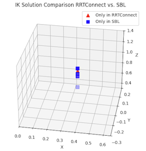

Planner Evaluation¶
We have evaluated several planners for their applicability with the Cobot.
RRTConnect: the default choice in MoveIt2; fast and reliable. Creates two Rapidly-exploring Random Trees (RRTs) - one from the start, one from the goal — and tries to connect them.SBL: Single-query Bi-directional Lazy planner. Plans (lazy) without collision checking validates after the path was found.LBKPIECE: Uses projection evaluation (joint dimension reduction, refer this page for more details). OMPL config:projection_evaluator.AnyPathShortening: a (meta) planner that runs several planners in parallel.
Although AnyPathShortening seems like a good approach, it is slower than a single planner and although we defined 6 different planners, observations revealed that in most cases only SBL, LBKPIECE or RRTConnect were used by AnyPathShortening.
A comparison further revealed that SBL yields the best results in our operation domain (the small table attached to the Cobot in direction x+).
Evaluation Setup¶
We have defined a bounding box (representing the operation domain) around the work bench and filled the bound box with points; using a resolution of kDelta = 0.05 # 5 [cm].
kXMin, kXMax = 0.3, 0.65
kYMin, kYMax = -0.3, 0.1
kZMin, kZMax = 0.5, 1.0
Point Cloud image of workbench:

For each (randomly selected) point in the bounding box, we ran the SBL, LIBPIECE and RRTConnect planner using the ik_reachable_set script; that plans a path with inverse kinematic (IK) and displays successful and failed runs.
Each planner had a timeout of 0.5 seconds.
Goal was to identify on how many points can be approach by the Cobot from above (for a pick and place task for example). We made sure that an IK solution was not just successful because point were located next to each other by selecting points from the bounding box randomly.
Example (green: successful IK runs, red: failed IK runs)

Results¶
The final "point cloud" for the SBL planner is shown in the following.

We can see that most points are accessible and the missing points are located at the edges of the bounding box and result from physical limitations (some are out of reach of the Cobot). Example: even with joint 3 and 4 extracted, the configuration with the longest reach of the cobot, the points in the right corner imply difficulties to approach from above.

Projecting the points on the workbench shows that the reach is acceptable.

While all three planners yield similar results, SBL seemed to have found more solutions overall.
A (visual) comparison of successful and failed IK runs for SBL and RRTConnect (representing the default planner) is shown in the following.

An comparison of the points that were only found by SBL or RRTConnect yields that these belong to the left corner, an areal difficult to reach due to the physical characteristics of the Cobot.

=> Selecting SBL due to the fact, that it found more solutions for the corners.